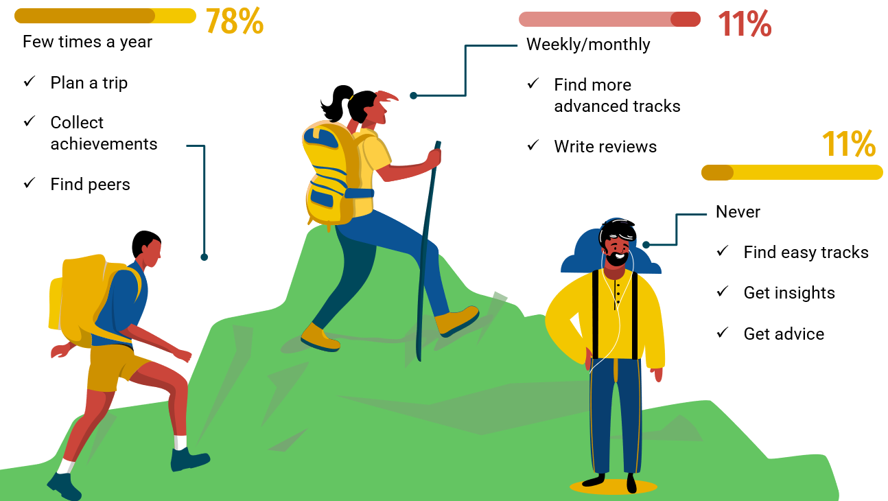

Let us introduce you to our vision: wireframes and landing page.
Read moreThe lack of a social platform for hiking in Romania where people can find new trails, share their feedback and add hiking buddies makes this activity unattractive to those who want to experience this kind of adventure.
inMontana encompasses the benefits of a social platform with those of an adventure-booking
one.
Users are able to find people with similar hobbies and connect with them and discover new
paths
into the Romanian mountains.
Businesses can promote their services ranging from housing, restaurants to bike rental
and
hiking classes.
Our target typology of people is the adventurous one, ready to explore new places.
On the other hand, businesses can use our application to promote their services.
Our key benefit is that instead of using different applications that deliver only one service,
a user may organize a great trip with inMontana and manage all bookings from a
single location.
Moreover, users can connect with other trip enthusiasts via our social component.
1. Active users
2. Monthly reccuring revenue
3. Bookings
1. Ads
2. Comissions from partners
3. Premium version
We discovered the problem by talking to each other and sharing our personal experiences.
We've discovered that everyone in the team has a group of friends with whom they'd want to go
hiking,
but as they started planning, many gave up on the idea. And even though we eventually managed
to choose a hiking route,
it turned out that the difficulty level was not a good match for everyone.
Moreover, we realized that throughout time we could have avoided endless conversations with
no real results in
matters of planning by creating an app that could simplify the whole process: inMontana.
Our first thought was to develop an application that would simplify the process of planning a hiking trip by including several functionalities. The application would enable its users to find hiking routes suitable to their needs, in terms of length, difficulty or geographical area, and to also shorten the time needed to organize everything. We believe that inMontana can become a way for people to discover nature in a safer and faster manner, so that every trip will become a fun adventure.
The two ways we tried to reach our potential customers are through a shareable Google form, and discussions with our friends and colleagues about the problem and our possible solution. The Google form was shared within several groups, to reach out to people with various hobbies, from the ones that do hiking on a regular basis, to the ones that have always found an excuse to avoid this kind of activity.
At first, we started chatting about trekking in Romania with friends and colleagues, without implying that this was our project proposal. Following these casual discussions, we realized that hiking is a hot topic among our friends, and that they actually do have issues when it comes to planning such trips. Wanting to see if the problem is real, rather than validate our idea, we decided to create a form for a larger group of people to fill out. The only thing we thought about at this point was getting the form to reach as many people as possible.
We have mentally prepared for any outcome while waiting for the results (even to change the idea or to adapt it). However, many people answered up to this point (91), and the statistics were quite encouraging:
We predominantly reached individuals between the ages of 18 and 25 (more than 75 percent of our respondents fall into this category), with the 25-50 age group coming in second. The vast majority of our respondents (more than 78 percent) said they go hiking a few times a year, with limited knowledge of hiking routes, insufficient time for planning, a lack of people to join them, or simply a lack of interest in this hobby being some of the most significant barriers people face when organizing a trip. When asked about the duration of a hiking trip, more than eight out of ten people said they go on one-day hikes. Their answers matched our expectations so far, hinting that the key features of our application would suit their needs.
We attempted to estimate how difficult it is for people to plan different aspects of the trip and achieved the following scores out of a possible 5: 3.04 for finding their ideal hiking route, 3.18 for finding hiking partners, and 2.55 for finding places to sleep. These figures suggest that the main features of our application should be an optimized route search and a social component for finding others to go on hikes with.
We wanted to learn more about what apps people use to plan a hike in order to better understand the entire process, and the results revealed that the most popular apps are those for social media, such as Facebook and WhatsApp, as well as those for maps (Google Maps) and our direct competitor, Muntii nostri. These responses point to the necessity for an app like inMontana that combines social and trip-planning components.
Lastly, in addition to the features that we had already intended to incorporate, we discovered that users are really interested in having an application that will make them feel secure (signaling functions for bears and other dangers, SOS button etc.). We also intend to provide challenges and enjoyable activities for our users in order to increase their interest with inMontana.
After analyzing the answers to the form, we concluded that our idea for the inMontana application is viable. A high percentage of the people whose opinion we asked for has declared that the main obstacles that stand between them and hiking are the lack of knowledge and time to organize their trip, and inMontana is ready to help them. Based on the information presented we can say that we are ready to move to the Customer Validation stage.
If you like our idea, feel free to check out our landing page!
Before officially launching the landing page, we made a series of changes that are described below:
BEFORE
AFTER
After finishing the landing page, we started sharing it on Whatsapp and through Facebook, to a community of people that are keen on hiking.
We launched the landing page at the end of November and analyzed the traffic between December 1-6.
During this period a number of 47 people visited our page, with a peak of 30 on 5th of December, when we
massively promoted it, with the traffic then gradually decreasing over the previous day from the first
moment we shared it, as expected. The avarage session duration was of about 30 seconds, a good and enough time to browse the information.
People accessed our page by directly accessing its link shared using mostly Whatsapp.
When it comes to location, most traffic comes from Romania, which is expected considering the fact
that our application promotes Romanian hiking trails and the groups we shared it to are
represented by Romanian communities. We also have a few visits from other countries, which could suggest an
interest in Romanian tourism.
As for the devices that were used for reaching our platform, our visitors came from both mobile and web browsers,
with chrome being the most popular one.
We analyzed the heatmap using Hotjar, to see how people interact with our landing page, and also scroll maps to check if they read the entire page. A public heatmap can be found here. At the moment that we draw these conclusions, Hotjar registers 25 sessions with 156 clicks. When it comes to the heatmap, the most accessed areas are the home button, followed by the subscribe area, with the rest of the options (features, pricing and contact) closely following them in popularity. This indicates the fact that the visitors are interested in the areas presented in the landing page and easily understand what inMontana has to offer.
As our app is built around Romanian mountains, we are focusing on competitors that are directly targeting
Romanian public and Romanian tracks.
Our target market is split between two sub-markets, namely users, people that are passionate about hiking,
and partners - people who own accommodation places in Romania, close to popular hiking locations.
We decided to focus solely on Romania, wishing to promote these activities and the places the country has to offer,
targeting people above 16 years old, from anywhere in the country.
Judging based on the biggest hiking communities on Facebook which have more than 50k members, we consider that
there are 60k customers that we target initially. We also analyzed the traffic on our competitors'
websites in order to gain more insights on the actual number of customers that may be interested in our product.
The result of this was an increase of almost 250% of what we thought of the number of customers is.
We used two websites that provide data on website similarity and traffic to learn more about our top competitors. We listed them using similarweb and used semrush to learn about the user traffic on their websites.
We used data from semrush to understand how big the market is and how the market is shared. We used the value of the average organic traffic for the period between June and September 2021. The sum of the averages is at 147k users, assuming all of them are unique.
We assume that: